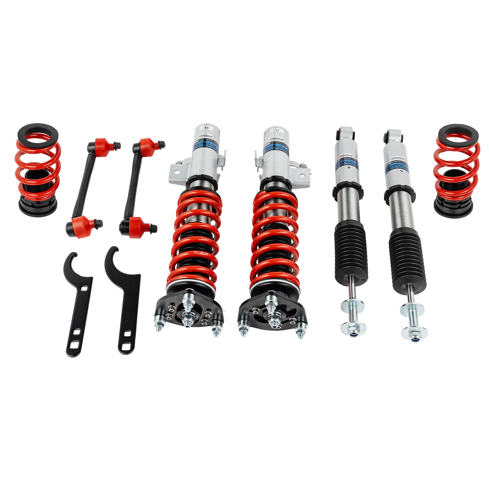

1 / 18Zawieszenie gwintowane do Honda Civic 2012-2015 PS002510
Aplikacja Honda Civic 9. generacji FG/FB 2012-2015 Honda Civic SI FG/FB 2012-2013 Honda Civic Sl FG/FB 2014-2015 Acura ILX DE2 2016-2019 Pakiet zawiera Gwinty przednie × 2 szt Gwinty tylne × 2 szt Klucz × 2 szt Cechy Konstrukcja amortyzatora jednorurowego Regulowana wysokość jazdy Regulowane napięcie sprężyny wstępnej Cześć Sprężyna o wytrzymałości na rozciąganie W zestawie kalosze Dane techniczne Twardość sprężyny…
Application Honda Civic 9th Gen FG/FB 2012-2015 Honda Civic SI FG/FB 2012-2013 Honda Civic Sl FG/FB 2014-2015 Acura ILX DE2 2016-2019 Package Includes Front coilovers × 2 pcs Rear coilovers × 2 pcs Wrench × 2 pcs Features Mono-tube shock design Adjustable ride height Adjustable pre-load spring tension Hi Tensile performance spring Rubber boots included Technical Specifications Spring rate Front: 6 kg/mm Spring rate Rear: 10 kg/mm Adjustable height: Yes Warranty Default 1-year warranty for any manufacturing defect, upgrade to 2 years with our Extended Warranty Program
1799,99 PLN
Opis produktu
Aplikacja
- Honda Civic 9. generacji FG/FB 2012-2015
- Honda Civic SI FG/FB 2012-2013
- Honda Civic Sl FG/FB 2014-2015
- Acura ILX DE2 2016-2019
Pakiet zawiera
- Gwinty przednie × 2 szt
- Gwinty tylne × 2 szt
- Klucz × 2 szt
Cechy
- Konstrukcja amortyzatora jednorurowego
- Regulowana wysokość jazdy
- Regulowane napięcie sprężyny wstępnej
- Cześć Sprężyna o wytrzymałości na rozciąganie
- W zestawie kalosze
Dane techniczne
- Twardość sprężyny Przód: 6 kg/mm
- Twardość sprężyny Tył: 10 kg/mm
- Regulowana wysokość: Tak
Gwarancja
Standardowa roczna gwarancja na każdą wadę produkcyjną, możliwość rozszerzenia do 2 lat w ramach naszego programu rozszerzonej gwarancji
Application
- Honda Civic 9th Gen FG/FB 2012-2015
- Honda Civic SI FG/FB 2012-2013
- Honda Civic Sl FG/FB 2014-2015
- Acura ILX DE2 2016-2019
Package Includes
- Front coilovers × 2 pcs
- Rear coilovers × 2 pcs
- Wrench × 2 pcs
Features
- Mono-tube shock design
- Adjustable ride height
- Adjustable pre-load spring tension
- Hi Tensile performance spring
- Rubber boots included
Technical Specifications
- Spring rate Front: 6 kg/mm
- Spring rate Rear: 10 kg/mm
- Adjustable height: Yes
Warranty
Default 1-year warranty for any manufacturing defect, upgrade to 2 years with our Extended Warranty Program
FAPO Polska
Ten produkt obsługujemy lokalnie
Autoryzowana obsługa
FAPO Polska prowadzi katalog, kontakt i zamówienia bez odsyłania klienta do zewnętrznych sklepów.
Dobór po aucie
Sprawdzamy dopasowanie produktu do pojazdu, rocznika i wersji przed finalizacją zamówienia.
Wsparcie po zakupie
Masz kontakt w Polsce w sprawach zamówień, wysyłki, gwarancji i zwrotów.